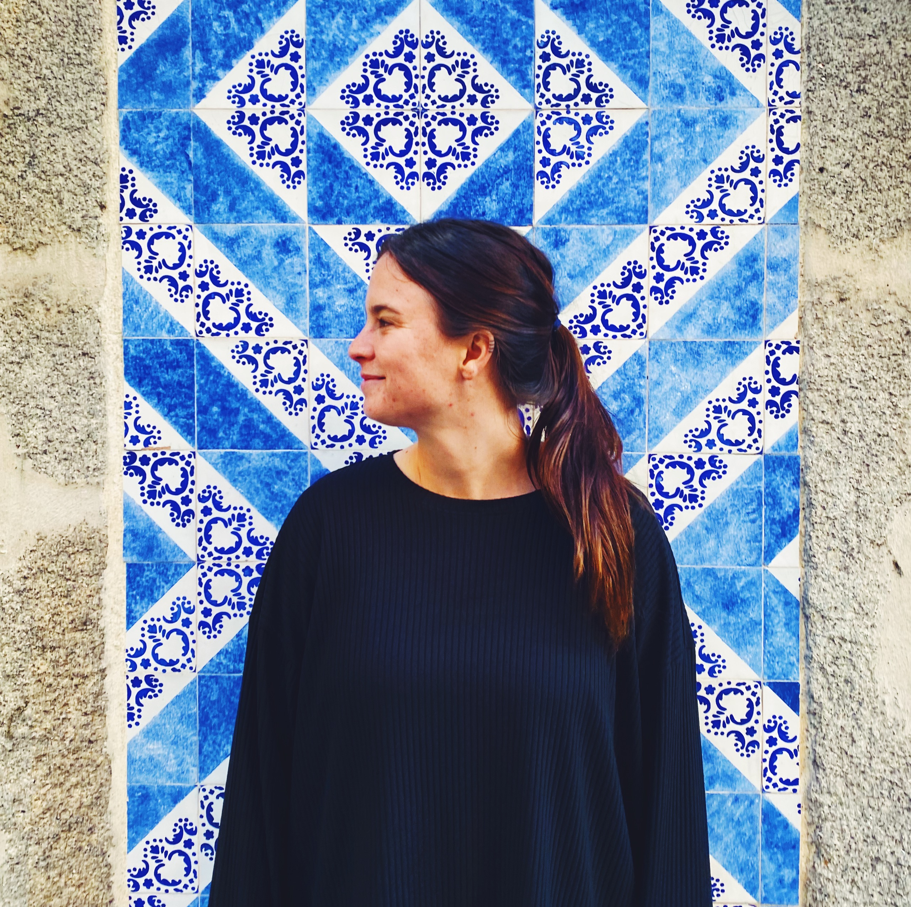

Hi there!
I’m Fran, I’m a photographer based in Queenstown, New Zealand. I’m originally from Argentina but my passion for travelling had brought me to my this new home.
I love taking photos of my day to day life, the people and nature that surrounds me. I believe it’s a way of keeping memories of those nourishing but ordinary moments.


For me photography has become a way of exploringand expressing my emotions. A photographer can capture any moment but what really makes it special it’s when he captures a moment with his soul.